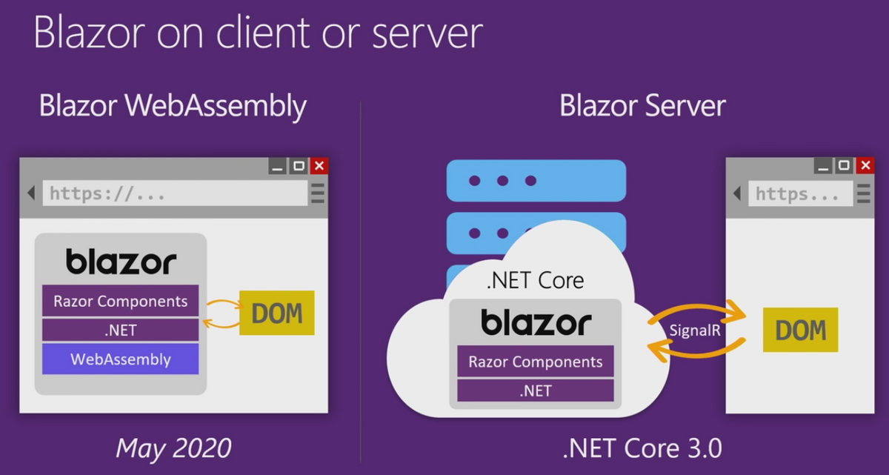
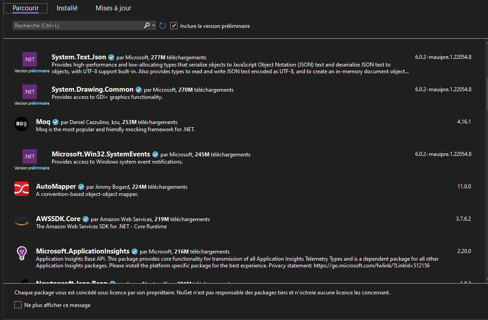
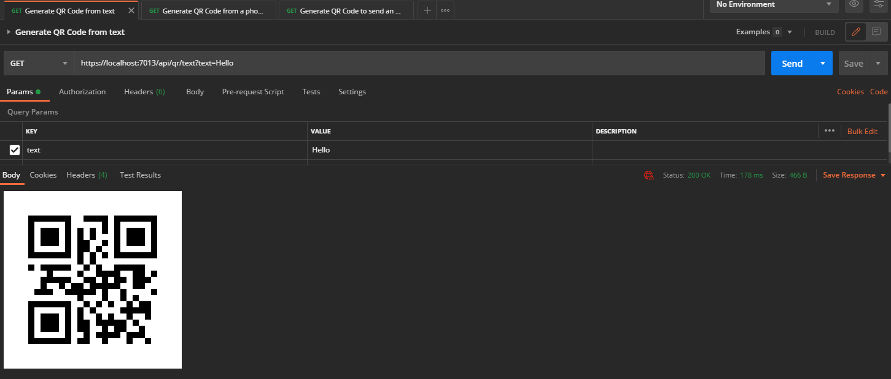

A little introduction
Overview
Welcome to this C# bundle ! Despite the name, this is not a C# language focused workshop. (Yes I know, but before you kill me, let me explain what I mean)
I don't think you can get all of a language syntax and quirks in a single one-day session. Properly learning a language (especially a complex one such as C#) is a long process involving a lot of try and retry, demo projects, PoC etc..
So, our goal for today is to simply get an "overview" of the Microsoft and .NET ecosystem. To do so, we'll start by:
- (Optional) Make a small C# console application to get used to the syntax
- Making a C# .NET Core Library for QR Code generation, you'll either code the logic yourself or use a NuGet package.
- Use this library inside a .NET MAUI application and test it on most platforms.
- Use the same library inside a .NET Blazor webapp, that will expose a REST API allowing users to create QR codes using a simple GET request
- Deploy this webapp on Azure
Technologies
During the overview, I talked about many different frameworks and languages, so let me give you the boring history part
-
C# : Is an Object Oriented, strongly typed language. It's really similar to Java in some aspects (only the best features, don't worry, the rest has been thrown away as it should)
-
.NET Framework (Used to be name .Net CORE) : The main Microsoft software framework. It is open source (MIT License) and cross platform
-
CLR : Serves as the execution engine of .NET Framework and offers many services such as memory management, type safety, exception handling, garbage collection, security and thread management. All programs written for .NET Framework are executed by the CLR

- .NET MAUI : The evolution of Xamarin, which allows programmers to deploy (using a single codebase) to IOS, Android, macOS and Windows (Linux is not really supported for many reasons, mainly because Microsoft target for MAUI is for "business apps" so end user focused apps, and Linux is not widely used by regular consumers)

- .NET Blazor : A framework for building interactive client-side web UI with .NET, it has two "versions", Blazor Server, and Blazor WASM.

As you can see, one of the main advantage of working with this software stack, is that you can share a lot of code and resources between them because they run on the same logic and framework (.NET). This is thanks to the fact that Microsoft has a lot of money and manpower to throw into all of these technologies at once, aswell as making them work together.
The interesting part
Head over to the next chapter now.
(Optional) Getting used to the syntax
Resources:
C#:
You can skip this part if you're already familiar with C#, if not, follow along.
Even if you've never touched C#, you will find the syntax really similar to C++ so you won't be THAT lost, don't worry.
There are a lot of great resources to start learning the basic syntax, I'll link them below, your first task of the day is then to complete these differents little exercises. Once you're done with them you should already have a better understanding of the tools you'll be working with later on.
Tasks:
- Create a test project in visual studio Microsoft Tutorial
- Complete the hello world task Microsoft Tutorial
- Complete the teleprompter console app Microsoft Tutorial
Creating a .NET Library (QrLib)
Now, let's get down to the actual business.
Start by opening the solution provided in QrCodeGenerator solution (You just have to click on the .sln file, or open it in Visual Studio 2022)
Your first (or second) task of the day, is to make a Qr code generation library. You have been provided with an interface file describing the functions you will have to implement.
If you have the time and knowledge, feel free to make it from scratch, you can start by reading the ISO Specification here (ISO Standard for QR code). You can then skip the next section
NuGet
However if you don't (it's fine, we're here to learn) get ready to meet one of your best friends from now on, the mighty .NET package manager, NuGet!
Here's how you can summon the NuGet god:
Right click on your project (you'll find it on the right of your screen) > Manage NuGet packages
You'll see this page:

This package manager contains thousands of packages authored by many different people, ranging from big companies such as Amazon to independent developers, even you can publish to NuGet.
NuGet takes care of versioning but also the platform of the library so that it only shows compatible libraries for your project.
Once you download a package, it will be added as a reference and you can access it in your code simply like this:
using SuperPackage;
Now, we need a QR Code generation package, feel free to use any that pleases you. My recommandation (and what I used personally) is QRCoder (documentation for it is available here: QrCoder documentation)
Search for QrCoder in NuGet and just press install, that's it, you're all good to go!
From now on, you're on your own ! Using Google, the documentation for the library you chose and the resources I provided, you should be able to implement the functions from IQrGenerator.cs in QrGenerator.cs .
To help you a bit, I created a test project that uses your library so you can test the functions you code (QrLibTester), just add it to your solution by right clicking your solution > Add existing project and select the .csproj file
If you can't do all functions and tried your hardest, it's okay, but try to at least get FromText working.
This may seem hard at first, especially if this is the first time you touch C# but trust me it's not that bad, feel free to ask for help if you're stuck.
Tasks:
- (Optional) Include using NuGet, a library such as QrCoder that takes care of generating an image of a QR Code
- Create a class that implements the IQrGenerator interface
- Implement FromText()
- Implement FromPhone()
- Implement FromMail()
Using that library in a .NET MAUI App
Resources:
MAUI (Xamarin) + UI:
Image treatment:
Creating a .NET MAUI Project
Congratulations on coding that library ! Now a library in itself is good but using it in an application may be a bit better, right ?
Introducing QrGenerator2022, the best QR Code generator on desktop for the year 2022 (yes this is the best name I could come up with)
For this purpose, we'll use .NET MAUI, as I said earlier, this is a multiplatform framework allowing us to use .NET to create user applications on many platforms such as Windows, Mac, Android and IOS.
To create a project along with your library, right click on your Solution in the Solution Explorer (Panel on the right) then click on "Add > New Project", select a .NET MAUI App (Preview) and name it QrGenerator2022.
You should see the project appears in the same panel.
Adding a dependency to a local .NET Library
Now we want to use QrLib in that new program in order to generate Qr codes, since QrLib is in the same "Solution" (Bundle of projects), we don't need NuGet. Instead, deploy QrGenerator2022 in the solution explorer panel and right click the Dependencies tab, from there click Add project reference and select QrLib, finish by pressing Ok.
You are now able to use any public function exported by QrLib inside your project, you don't have to worry about any platform, everything is taken care of by the .NET Framework.
Creating your first view
Now, let's see how we can design a "View" (Interface) to generate a test QR Code. Creating views in .NET MAUI is done through a markup language called XAML (Although you can create your UIs by going only-code), I've linked some useful tutorials in the "Resources" section above.
Start by running the sample program, to do so right click on it and Set as startup project then press F5 or the play button. Now open the MainPage.xaml file to try and figure out how it the UI is rendered from XAML. Using this and the documentation online, you should be able to complete the following tasks.
Tasks:
- Remove the sample UI (You can keep the grid layout or use your own)
- Add an Entry element (It's a fancy textbox), so that the user can input the QR text.
- Add a button that triggers the QR Code generation, for now, just create the button Clicked handler and leave it as-is in the code.
- Add a GraphicsView element that will be later used to draw the generated QR code, make sure to give it a size !
- Try and make the UI good looking, it's always nice
Adding logic to your view
Disclaimer: Usually, you design your program by following a pattern (MVVM for example) but for the sake of simplicity we'll do it the dirty way here.
Now that we have our fancy UI, let's make it do something useful. If you followed properly, your button should now have a Clicked handler in the code (If you can't find code, deploy the MainPage.xaml on the right and click the .cs file, that's the code-behind).
It's up to you to code this button logic, here's what it should do (feel free to export this in another function and call it from the handler):
Tasks:
- Check if the entered text is null
- Create a QrGenerator from QrLib, (you may have to add a using statement)
- Generate a QR from the entry text by calling QrGenerator.FromText()
- (Wait for next step) Pass the byte[] to your Drawable class
- (Wait for next step) Invalidate the GraphicsView so that it is redrawn
You now have a byte[] representing the image data, you need to convert it to an actual Image object, then draw it on a canvas. To perform these actions you'll need to be inside a graphical-context.
Creating your graphical context
Create a class called QrDrawable in the MainPage.xaml.cs file, this class is your graphical context and will be used to render the QR code, this class MUST implement IDrawable (Visual studio can do it for you if you haven't figured it out yet, just right click on the error line and then click on the lightbulb).
Add a public property to this class with a byte[] type and set its default value to null (Check how-to in the resources). This property will be used to pass the byte array between the graphical context and the view-code.
Go back to the previous tasks, you should now be able to pass the byte[] and call the Invalidate function on your GraphicsView.
You can go then ahead and code the Draw() (implementing IDrawable) function logic so that it performs the following tasks:
Tasks:
- Check if the byte[] property is not null
- Create a MemoryStream from it and call GraphicsPlatform.CurrentService.LoadImageFromStream to get an image from it
- Draw the resulting image on the canvas (Check the resources)
You should be done, congrats
If you did everything properly, you can now start your MAUI program, enter text in your entry and click the generate button, you should get a nice looking QR Code. Go ahead and scan it ! You can be proud (and you can go back later on if you want to add features such as generating from a phone number and such.)
If not, go back and figure out what's wrong, you can use breakpoints by pressing F9 and hover any variable to check its value during runtime. Make sure that the button press calls the handler.
Using this library in a .NET Blazor server
Now, wouldn't it be nice if we could generate these QRs by simply making a request to an API ? If you look in this repository you'll find a file in the postman folder containing a collection of postman requests. Your job is to deploy a .NET Blazor server hosting an API that can respond to these requests by generating a QR Code using your own library (QrLib).
Create a .NET Blazor Server project
Let's start by adding a .NET Blazor server project to our solution and referencing QrLib. It is the same process as the .NET MAUI App we created before, just right click on the solution in the solution explorer and add a Blazor Server project Name it: QrGeneratorAPI .NET Blazor can be used to render user interface as well as routing (and many other things) but we'll focus on routing and handling API requests.
Adding a dependency to a local .NET Library
Now we want to use QrLib in that project, since QrLib is in the same "Solution" (Bundle of projects), we don't need NuGet. Instead, deploy QrGeneratorAPI in the solution explorer panel and right click the Dependencies tab, from there click Add project reference and select QrLib, finish by pressing Ok.
You are now able to use any public function exported by QrLib inside your project, you don't have to worry about any platform, everything is taken care of by the .NET Framework.
Adding QrGenerator as a singleton service
Blazor Server provides a dependency injection logic, meaning you can register services / resources instances and access them from different parts of the code, whether it is in a controller or in a page.
Let's register our generator as a service, to do so, head over to Program.cs You'll notice a variable called builder, add a new line before
builder.Services.AddRazorPages();
and type in this code
builder.Services.AddSingleton<IQrGenerator>(new QrGenerator());
you might have to add a using statement as such:
using QrLib;
If you get an error saying QrLib does not exist, you didn't add a dependency to QrLib, refer to the previous section. This lines tells Blazor to create an instance of QrGenerator that implements the interface IQrGenerator as a singleton and make it available for anyone asking. Singleton is the service lifetime, here are all of the available lifetimes:
- Transient operations are always different, a new instance is created with every retrieval of the service.
- Scoped operations change only with a new scope, but are the same instance within a scope.
- Singleton operations are always the same, a new instance is only created once.
Adding a controller
Create a Controllers folder in the solution, right click on it, and add a Controller file, choose API > Empty API Controller and name it QrController.cs The created file should have this structure:
using Microsoft.AspNetCore.Http;
using Microsoft.AspNetCore.Mvc;
namespace QrGeneratorAPI.Controllers
{
[Route("api/[controller]")]
[ApiController]
public class QrController : ControllerBase
{
}
}
Remove the Route attribute as we won't need a global one
Injecting a service into a controller
Let's get our QrGenerator injected into our controller, to do so, start by adding a IQrGenerator variable to your class as private and add a constructor to your class like so:
using Microsoft.AspNetCore.Http;
using Microsoft.AspNetCore.Mvc;
namespace QrGeneratorAPI.Controllers
{
private IQrGenerator QrGenerator { get; set; }
public QrController(IQrGenerator qrGenerator)
{
if (qrGenerator == null)
throw new ArgumentNullException(nameof(qrGenerator));
this.QrGenerator = qrGenerator;
}
}
Blazor DI will take care of injecting the service as a parameter to your constructor when constructing the instance, you don't have anything particular to do.
Adding routes handler to your controller
Now, let's get some routes in our controller shall we; we're going to need three routes:
- A route to generate a Qr Code from text
- A route to generate a Qr Code from a phone number
- A route to generate a Qr Code from an email structure
If you did not implement all of these functions in your library, you can go back and do it, if you don't want to, just don't implement the routes for them. Adding a route handler is really easy, all you have to do is create a function, add the parameters you want aswell as how to get them (Exemple: From the body, from json, from the query URL...), add the HTTP method to handle, and a return type! I'll make the first one for you, so you can reuse the code for your own routes
[HttpGet] // We handle HTTP Get requests ...
[Route("api/qr/text")] // ... on https://domain.com/api/qr/text
public IActionResult GetText([FromQuery(Name = "text")] string text) // We need a parameter named text that will be taken from the query URL ?name=
{
return Ok("Everything went fine"); // We return a 200 with a message
}
Now that you have your routes setup, let's make them do useful things, but I'm not going to help you for this one, I'll just guide you a bit.
Your code will need to do these things:
- Call QrGenerator.FromMethod and get the byte data
- return a file using File() with image/png as the MIME type.
Tasks:
- Add a route handler for Qr Text generation
- Add a route handler for Qr Phone generation
- Add a route handler for Qr Mail generation
Expose these routes
You're almost done, we have to tell Blazor to expose our controller along with the routes, head back over to Program.cs, from there, add this code:
app.MapFallbackToPage("/_Host");
// Add this here
app.UseEndpoints((endpoints) =>
{
endpoints.MapControllers();
});
//
app.Run();
This simply tells Blazor how to behave with our controller and how to expose it.
Test with Postman
You're all set! Go ahead and open the collection in Postman and try some requests, you will probably have to change the URLs to match your controller routes.
If you succedeed, you should see your QR codes directly in postman like so: 
Deploying on Azure
Congratulations ! Let's now see how easy it is to deploy it on azure This won't cost you any money as you technically have a student azure account, check out the advantages of being a student (https://azure.microsoft.com/en-us/free/students/).
If you went this far, you can go ahead and deploy this on azure, all you have to do is right click on your .NET Blazor server project in the solution explorer > Click Publish, you'll have multiple options here, deploying on a docker container, to an FTP server etc., chose Azure and follow the instructions !
Thanks
Thanks for following along this bundle, even if you didn't complete it, I hope it got you (even a little bit) interested in the .NET ecosystem and how easy things work together in it, there is much more to learn, from Mono to Unity, so try and make your next project in C# if you can :)